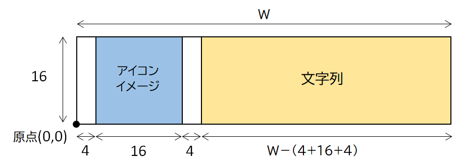

ブラウザ（NSBrowser）の応用
〜ファイルのアイコンを表示する〜
Matrix based delegate方式をベースとする
Finderと同じように、ファイル/ディレクトリ名の先頭にアイコンを表示する。
アイコンの左右に余白のスペース（各4ピクセル）を埋め込む。高さも変更したかったが（私が調べた限りでは）できなかった。高さは16ピクセルが規定値。
ファイル/ディレクトリのアイコンの取得（NSWorkspaceクラス）
（関数にした理由は特にない）
ブラウザにファイル/ディレクトリ名とアイコンを表示する
ブラウザ（NSBrowser）は、ブラウザセル（NSBrowserCell）の集合である。
ブラウザセルには、NSBrowserCellクラスのメソッドにより、文字列とイメージを表示することができる。以下のデリゲートメソッドのcell引数にはNSBrowserCellオブジェクトが渡されてくる。文字列にファイル/ディレクトリ名を指定し、イメージにそのアイコンイメージを指定する。
表示するアイコンの左右にスペースを埋め込む
上記の方法では、イメージと文字列は隙間なく表示される。
以下に、NSBrowserCellクラスのサブクラスを作成することにより、イメージの左右に４ピクセルのスペースを埋め込む方法を示す。
(1) NSBrowserCellのサブクラスを、NSBrowserクラスのセルとして使用することを宣言する。
(2) NSBrowserCellクラスのサブクラスの実装
プロパティにアイコンイメージを持つ。drawInteriorWithFrame:inView:メソッドをオーバーライドし、アイコンイメージをセルの特定の位置に表示する。
セルの表示領域の大きさは、引数cellFrameにより渡される。
これを、アイコンの表示領域と文字列の表示領域に分割する。アイコンはNSImageクラスのdrawRectメソッドによりビューに表示する。文字列はsuperクラスの同メソッドを呼び出すことで表示する。
引数cellFrame：rect( 0, 0, W, 16)
アイコンの表示領域：rect( 4, 0, 16, 16)
文字列の表示領域：rect( 24, 0, W-24, 16)

(3) delagateメソッドの実装
Item based delegate方式をベースとする
（私が調べた限りでは）文字列の先頭にアイコンを表示することができなかった。仕方ないのでブラウザで選択したノード（ファイル/ディレクトリ）のアイコンをイメージビューに表示するようにしてみた。
行の高さは、NSBrowserクラスのrowHeightプロパティによって変更可能である。これは、 item based delegate方式でのみ可能な方法であるらしい。例では行の高さを20ピクセルにしている。